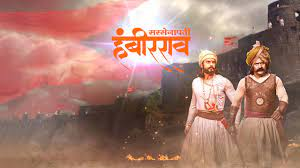
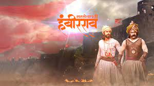
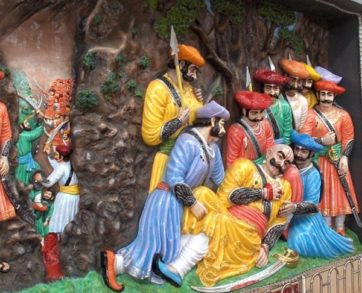
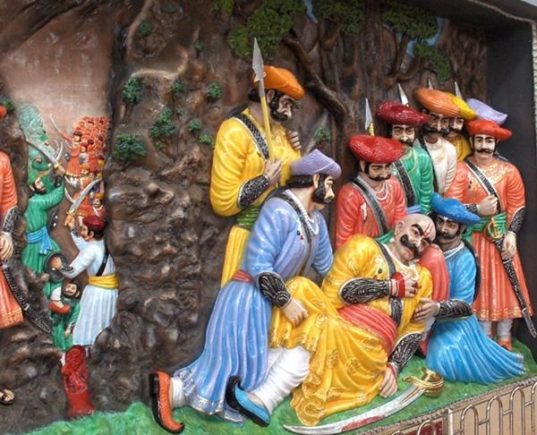
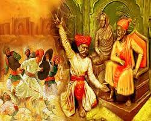
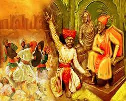
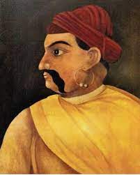
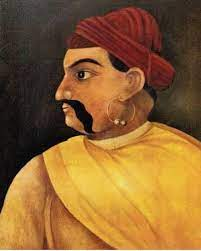
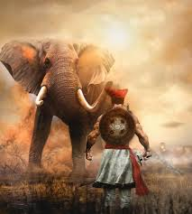
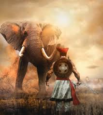

Bahirji Naik, (original name Bhairavnath Jadhav), was a 17th century Maratha spy and head of intelligence department in the army of Shivaji. Bahirji was honoured with title of "Naik" (transl. Chief) by King Shivaji due to his great work.As Shivaji’s Chief of Intelligence, he was very successful in his methods.His tomb is currently situated on Bhupalgad (Banurgad) in Khanapur taluka of Sangli district. He was born in the village of Shingave Naik, Ahmednagar. In 1592, Bahirji's son, Tukoji Naik, built Ram Mandir and the outer border of the Shingave village. A stone bearing an inscription of his name is kept in the Ram Mandir.[citation needed] Not much is or was known about the early life of Bahirji, except that his expeditions and adventures as a spy in Shivaji's army greatly contributed to the success of the Maratha Empire. Role during wars: It is said that when a knight from Adil Shah, Afzal Khan, started his journey towards the Maratha Empire in order to capture it, Bahirji poisoned the lead flag-bearing elephants. This led to the enemy abandoning the quest. (The death of a flag-bearing elephant was considered a bad omen.) In Umbar Khind, a mountain pass near Lonavala, Shivaji ambushed and defeated the 20,000-strong army of Colonel Kartalab Khan, a well-known military officer of Shahiste Khan, in the Battle of Umberkhind. This victory is attributed to Bahirji's intelligence collection. Shivaji captured valuable military equipment and accepted the deserters from Khan's army into his own
 


Hambirrao Mohite (1630–1687), also known as Hansaji, was a prominent Maratha general who held the esteemed position of the 5th Senapati of the Maratha Army during the reign of Chhatrapati Shivaji.He was recognized for his exceptional military prowess and successfully led various campaigns on behalf of Shivaji, subsequently continuing his service under Chhatrapati Sambhaji.Hambirrao's true name was Hansaji, and the title Hambir Rao was bestowed upon him by Chhatrapati Shivaji in 1674. His descendants continued the title of Hambir Rao. Accession of Sambhaji After the demise of Chhatrapati Shivaji in 1680, Soyarabai, who was Hambirrao's sister, attempted to displace Sambhaji from the throne in favor of her own 10-year-old son, Rajaram. Hambirrao was temporarily absent from Raigad, and he was urgently called back. Upon his return, his sister earnestly implored him to secure the army's backing for her son as the future Chhatrapati of the Maratha Empire. Hambirrao traveled to Panhala with the initial intent of apprehending Sambhaji but ultimately switched his allegiance, offering support to Shivaji's elder son over his own sister. This action played a pivotal role in securing Sambhaji's ascension on throne and thwarting the conspiracy devised by Soyarabai. Attack on Burhanpur Main article: Sacking of Burhanpur (1681) On January 30, 1681, Burhanpur, a prominent trade center connecting southern and northern India, witnessed a sudden attack by Hambirrao Mohite and Chhatrapati Sambhaji. During this time, Jehan Khan served as the Subahdar of Burhanpur, and the city's garrison comprised only 200 soldiers. In contrast, Hambirrao commanded a formidable army of 20,000 troops. The Mughals found themselves unable to effectively resist Hambirrao's forces, resulting in substantial losses for them. In this battle, the Marathas seized assets exceeding a value of 1 crore rupees. Later on 17 March 1683, Hambirrao emerged victorious in a battle against Ranamast Khan, a formidable chieftain in the service of Aurangzeb, near the vicinity of Kalyan-Bhiwandi.
 


Baji Prabhu Deshpande 13 July 1660 was a general of the Maratha Army. He is known for his role in the Battle of Pavan Khind at Ghod Khind, where he sacrificed his life defending Shivaji Maharaj from incoming Adil Shahi forces of Siddi Johar.He also was a landlord or Vatandar in the Maval region.[citation needed] A 20th century depiction of Baji Prabhu with Shivaji at Pavan Khind by M.V. Dhurandhar. Shivaji Maharaj continued to push into the Bijapur territory, after defeating Afzal Khan and the rout of the Bijapur army at Pratapgad. Within a few days, the Marathas captured Panhala fort (near the city of Kolhapur). Meanwhile, another Maratha force, led by Netaji Palkar, pushed towards Bijapur. Bijapur forces repulsed this attack, forcing Shivaji, some of his commanders and soldiers to retreat to Panhala fort. The Bijapur troops was led by Siddhi Johar, an Abyssinian general. Discovering Shivaji's location, Johar laid siege to Panhala. Netaji Palkar made repeated attempts to break the Bijapur force siege from outside, but these failed.A risky plan was then put into action: Shivaji, Baji Prabhu Deshpande with a select band of troops would attempt to break through the siege at the night, and make for Vishalgad. In order to deceive the Bijapur forces, to avoid a chase if they found out that Shivaji had broken the siege, Shiva Kashid a barber by profession, had physical resemblance to Shivaji, volunteered to dress like the king and let himself be captured.On a stormy full moon night (night of Guru Purnima) 600 men led by Baji Prabhu and Shivaji, broke through the siege. They were pursued by the Bijapur force. As planned, Shiva Kashid allowed himself to be captured and taken back to the Bijapur camp, guessing that he would be put to death once the charade was discovered. This gave the fleeing Maratha force some breathing space.As soon as the Bijapur force realized their mistake, the chase was on again, led by Siddhi Masood, the son-in-law of Siddhi Johar. Near the pass of Ghodkhind (Horse's Pass), the Marathas made a final stand. Shivaji and half of the Maratha force pushed for Vishalgadh, while Baji Prabhu, his brother Phulaji and the remaining Bandal Sena of a few hundred men blocked the pass and fought against 10000 Bijapur soldiers in the Ghodkhind Pass for more than 18 hours. Baji Prabhu used a weapon called "Dand Patta". Through the battle, Baji Prabhu, though grievously injured, continued fighting, inspiring his men to fight on until Shivaji's safe journey to Vishalgadh was signaled by the firing of three cannon volleys. It should be mentioned that when Shivaji approached Vishalgad with 300 men, the fort was already under siege by Bijapur sardars named Suryarao Surve and Jaswantrao Dalvi. Shivaji with his 300 men had to defeat Surve to reach the fort. The Ghod Khind pass was subsequently named Pavan Khind ("Holy Pass") by Shivaji, in honor of the sacrifice of Baji Prabhu and his troops

 

The Treaty of Purandar (June 1665) had forced Shivaji Maharaj to surrender 23 forts to the Moghuls, including Sinhagad. The treaty hurt the pride of the Marathas. None felt the sting more deeply than Jijabai, the mother of Shivaji Maharaj, who was in a way the mother of the kingdom. Shivaji Maharaj, however deeply he loved his mother, could not fulfill her wish, because the conquest was considered virtually impossible, with the fortifications and select Rajput, Arab and Pathan troops guarding it. Shivaji Maharaj’s lieutenants shared this view.But, Jijabai refused to share their hesitation. It is said that once determined, a woman’s strength of will and thirst of sacrifice are the most potent forces, and the example Shivaji Maharaj’s mother Jijabai definately supported this view. One morning, says the ballad of Sinhagad, while she was looking out of the window of Pratapgad, she saw in the distance the Lion Fort. The thought that the fort was now under the control of Moghuls enraged her. She summoned a rider and ordered him to go in all haste to Shivaji Maharaj, then resident at Rajgad, and tell him that she desired his immediate presence. Rajmata Jijabai's yearning for Sinhgad Shivaji Maharaj promptly responded to his mother’s summons, without knowing the reasons for its urgency. His heart sank when he discovered what it was that Jijabai wanted of him. He tried to plead earnestly that the conquest would be likely to be in vain, despite even mammoth efforts. The lines of the ballad have Shivaji Maharaj saying :“To win it went forth many, but there came back never any : Oft planted was the mango seed, but nowhere grows the tree.” However, eventually dreading his mother’s displeasure most of all, he thought of a suitable man to whom could be entrusted the perilous task. There was nobody else capable thought Shivaji Maharaj other than Tanaji Malusare, his prized companion from early youth, and a man of iron will, who had accompanied Shivaji Maharaj on all historic associations. Tanaji Malusare on the 'Mission to re-capture Sinhgad' Tanaji was in the village of Umbrat, engaged in celebrating his son’s wedding, when the call came for him to meet with Shivaji Maharaj at Rajgadh. He hastened to meet Shivaji Maharaj, accompanied by his brother Suryaji and his uncle Shelarmama. Shivaji Maharaj did not have the heart to tell his dear comrade that he had been summoned to such a mission, and directed Tanaji to Jijabai to hear from her the nature of his mission.Undaunted by the terrifying nature of his mission, the Lion-hearted Tanaji vowed either to accomplish it or die in the process. He set out at night and from the Konkan marched towards the fortress with his men, reaching it unnoticed on a cold, clear and moonless night – in February 1670. He had taken with him Shivaji Maharaj’s favourite ghorpad or lizard to assist in scaling the fort wall (the lizard was regularly used to map a suitable route for climbing forts). The creature, to whose waist a cord was tied, refused to climb the fort, as if to warn Tanaji of the impending disaster. Tanaji expressed his rage, and the lizard got the message and terrified, scaled the hill top, which helped the Marathas to clamber the cliff.

 

He was one of the warriors who participated in the successful 1659 battle of Shivaji Maharaj's forces against the forces of Bijapur's Adil Shah which immediately followed Adil Shah's general Afzalkhān's death at Jāwali. He also participated in the battles at Trimbakeshwar Fort and Wāni-Dindori against the Mughal Empire. He participated in Shivaji's invasion of Surat in 1664. He also participated in the Battle of Salher Moropant surrounded and attacked the 25,000 strong Mughal infantry at Salher with his 20,000 infantry. Prominent maratha sardar and Shivaji's childhood friend Suryaji Kakde was killed by a Zamburak cannon in the battle. Chhatrapati Sambhaji son of Shivaji stayed with Moropant's relatives in Mathura after their escape from Agra.[citation needed]. Moropant introduced sound revenue administration to Shivaji's regime, and played an important role in resource planning concerning defenses and maintenance of strategic forts. He was also responsible for the construction and administration of Pratapgad. At Chhatrapati Shivaji's death, Moropant Pinglay was working as a supervisor of fort development activities in Nashik District for the Salher-Mulher forts.[citation needed] Under Shivaji Maharaj's successor, Chhatrapati Sambhaji, he also participated in the battle of Burhanpur in 1681 which resulted in the sacking of the important Mughal trade centre of Burhanpur. He was killed during an ambush by Mughal forces in 1683.
 


Yesaji Kank was the commander-in-chief of the Maratha army for 30 years, only spending 22 days at home during that time. He was known for his bravery, honesty, and patriotism. His main responsibilities included maintaining discipline in the infantry and implementing administrative methods in newly acquired areas.Yesaji Kank was a childhood comrade of Shivaji, who was the founder of the Maratha Empire. Kank was born in the foothills of Rajgad. His father, Dadoji Kank, had served in the army of Shahaji Kank was the head of the foot soldiers in the army of Shivaji, specializing in guerilla warfare techniques. From childhood until the death of Shivaji, he remained loyal to the crown, and played a major role in the Battle of Pratapgad. Kank was also part of a council meeting known as Sadar, and even fought a drunken elephant for Shivaji Maharaj. Yesaji was one of the most trusted partners that Maharaj had. There are claims that he was seven feet tall